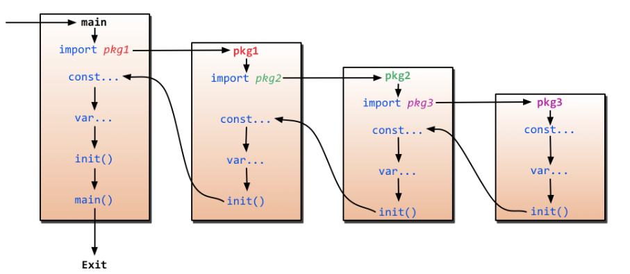

Go for web
Table of Contents
https://github.com/astaxie/build-web-application-with-golang/blob/master/zh/preface.md
1 环境配置
mac install
https://golang.org/doc/install?download=go1.11.5.darwin-amd64.pkgThe package should put the /usr/local/go/bin directory in your PATH environment variable.
You may need to restart any open Terminal sessions for the change to take effect.
GOPATH
$GOPATH/go与工作空间编译应用: 在任意的目录执行如下代码go install mymath
2 go 命令
https://github.com/astaxie/build-web-application-with-golang/blob/master/zh/01.3.md
go build
编译代码
go clean
利用这个命令清除编译文件，然后github递交源码
go clean -i -ngo fmt
格式化代码
go get
动态获取远程包
go install
这个命令在内部实际上分成了两步操作：第一步是生成结果文件(可执行文件或者.a包)，第二步会把编译好的结果移到$GOPATH/pkg或者$GOPATH/bin
go test
会自动读取源码目录下面名为*test.go的文件，生成并运行测试用的可执行文件
go generate
通过分析源码中特殊的注释，然后执行相应的命令
godoc
看文档
go run
编译并运行Go程序
3 go 基础
package <pkgName>（在我们的例子中是package main）这一行告诉我们当前文件属于哪个包
包名main则告诉我们它是一个可独立运行的包，它在编译后会产生可执行文件。除了main包之外，其它的包最后都会生成*.a文件
每一个可独立运行的Go程序，必定包含一个package main，在这个main包中必定包含一个入口函数main，而这个函数既没有参数，也没有返回值
定义变量
var vname1, vname2, vname3 type= v1, v2, v3定义三个变量初始化/* 定义三个变量，它们分别初始化为相应的值 vname1为v1，vname2为v2，vname3为v3 编译器会根据初始化的值自动推导出相应的类型 */ vname1, vname2, vname3 := v1, v2, v3这种简洁形式叫做简短声明。不过它有一个限制，那就是它只能用在函数内部；在函数外部使用则会无法编译通过，所以一般用var方式来定义全局变量
下划线是个特殊的变量名，任何赋予它的值都会被丢弃
_, b := 34, 3534就丢弃了常量
常量可定义为数值、布尔值或字符串等类型
// 指定类型 const Pi float32 = 3.1415926 const i = 10000fmt.Println("当前时间：", time.Now())内置基础类型
- Boolean
- 数值类型
- 字符串
- 错误类型
基础类型底层都是分配了一块内存，然后存储了相应的值
- 一些技巧
分组声明
同时声明多个常量、变量，或者导入多个包时，可采用分组的方式进行声明
iota枚举
这个关键字用来声明enum的时候采用，它默认开始值是0，const中每增加一行加1
const ( a = iota //a=0 b = "B" c = iota //c=2 d, e, f = iota, iota, iota //d=3,e=3,f=3 g = iota //g = 4 )- 大小写命名
- 大写字母开头的变量是可导出的，也就是其它包可以读取的，是公有变量；小写字母开头的就是不可导出的，是私有变量。
- 大写字母开头的函数也是一样，相当于class中的带public关键词的公有函数；小写字母开头的就是有private关键词的私有函数。
- array、slice、map
array
定义数组
var arr [n]type由于长度也是数组类型的一部分，因此[3]int与[4]int是不同的类型，数组也就不能改变长度
数组之间的赋值是值的赋值，即当把一个数组作为参数传入函数的时候，传入的其实是该数组的副本，而不是它的指针
c := [...]int{4, 5, 6} // 可以省略长度而采用`...`的方式，Go会自动根据元素个数来计算长度二维数组声明
// 声明了一个二维数组，该数组以两个数组作为元素，其中每个数组中又有4个int类型的元素 doubleArray := [2][4]int{[4]int{1, 2, 3, 4}, [4]int{5, 6, 7, 8}} // 上面的声明可以简化，直接忽略内部的类型 easyArray := [2][4]int{{1, 2, 3, 4}, {5, 6, 7, 8}}多维数组的映射关系
slice
动态数组
slice并不是真正意义上的动态数组，而是一个引用类型。
slice总是指向一个底层array，slice的声明也可以像array一样，只是不需要长度
//声明一个slice，并初始化数据 slice := []byte {'a', 'b', 'c', 'd'}slice可以从一个数组或一个已经存在的slice中再次声明

slice是一个 引用,所以当引用改变其中元素的值时，其它的所有引用都会改变该值，
ar[:]等价于 ar[0:len(ar)] 同python从概念上面来说slice像一个结构体，这个结构体包含了三个元素:
- 一个指针，指向数组中slice指定的开始位置
- 长度，即slice的长度
- 最大长度，也就是slice开始位置到数组的最后位置的长度

slice函数:
len 获取slice的长度
cap 获取slice的最大容量
append 向slice里面追加一个或者多个元素，然后返回一个和slice一样类型的slice
copy 函数copy从源slice的src中复制元素到目标dst，并且返回复制的元素的个数
map
map也就是Python中字典的概念，它的格式为map[keyType]valueType
map key 多了很多类型，可以是int，可以是string及所有完全定义了==与!=操作的类型
使用map过程中需要注意的几点：
- map是无序的，每次打印出来的map都会不一样，它不能通过index获取，而必须通过key获取
- map的长度是不固定的，也就是和slice一样，也是一种 引用类型
- 内置的len函数同样适用于map，返回map拥有的key的数量
- map和其他基本型别不同，它不是thread-safe，在多个go-routine存取时，必须使用mutex lock机制
零值
关于“零值”，所指并非是空值，而是一种“变量未填充前”的默认值，通常为0
- make、new操作
make用于内建类型（map、slice 和channel）的内存分配
slice、map和channel来说，make初始化了内部的数据结构，填充适当的值
make返回初始化后的（非零）值
new用于各种类型的内存分配
new(T)分配了零值填充的T类型的内存空间，并且返回其地址
new返回指针
4 流程和函数
Go中流程控制分三大类：条件判断，循环控制和无条件跳转
if
// 计算获取值x,然后根据x返回的大小，判断是否大于10。 if x := computedValue(); x > 10 { fmt.Println("x is greater than 10") } else { fmt.Println("x is less than 10") } //这个地方如果这样调用就编译出错了，因为x是条件里面的变量 fmt.Println(x)goto
用goto跳转到必须在当前函数内定义的标签
func myFunc() { i := 0 Here: //这行的第一个词，以冒号结束作为标签 println(i) i++ goto Here //跳转到Here去 }for
package main import "fmt" func main() { sum := 0 for index := 0; index < 10; index++ { sum += index } fmt.Println("sum is equal to ", sum) }有些时候如果我们忽略expression1和expression3,就是while功能(省略了前;和后;)
sum := 1 for sum < 1000 { sum += sum }for配合range可以用于读取slice和map的数据：
//丢弃声明而未调用的key for _, v := range map{ fmt.Println("map's val:", v) }switch
integer := 6 switch integer { case 4: fmt.Println("The integer was <= 4") fallthrough case 5: fmt.Println("The integer was <= 5") fallthrough case 6: fmt.Println("The integer was <= 6") fallthrough default: fmt.Println("default case") }函数
func funcName(input1 type1, input2 type2) (output1 type1, output2 type2) { //这里是处理逻辑代码 //返回多个值 return value1, value2 }
变参
func myfunc(arg ...int) {}arg …int告诉Go这个函数接受不定数量的参数,注意，这些参数的类型全部是int
传值与传指针
package main import "fmt" //简单的一个函数，实现了参数+1的操作 func add1(a *int) int { // 请注意， *a = *a + 1 // 修改了a的值 return *a // 返回新值 } func main() { x := 3 fmt.Println("x = ", x) // 应该输出 "x = 3" x1 := add1(&x) // 调用 add1(&x) 传x的地址 fmt.Println("x+1 = ", x1) // 应该输出 "x+1 = 4" fmt.Println("x = ", x) // 应该输出 "x = 4" }传递指针的好处
- 传指针使得多个函数能操作同一个对象。
- 传指针比较轻量级 (8bytes),只是传内存地址，我们可以用指针传递体积大的结构体。 如果用参数值传递的话, 在每次copy上面就会花费相对较多的系统开销（内存和时间）
- Go语言中channel，slice，map这三种类型的实现机制类似指针，所以可以直接传递，而不用取地址后传递指针。 （注：若函数需改变slice的长度，则仍需要取地址传递指针）
defer
延迟（defer）
在defer后指定的函数会在函数退出前调用
unc ReadWrite() bool { file.Open("file") defer file.Close() if failureX { return false } if failureY { return false } return true }如果有很多调用defer，那么defer是采用 后进先出 模式，所以如下代码会输出4 3 2 1 0
for i := 0; i < 5; i++ { defer fmt.Printf("%d ", i) }函数作为值、类型
package main import "fmt" type testInt func(int) bool // 声明了一个函数类型 func isOdd(integer int) bool { if integer%2 == 0 { return false } return true } func isEven(integer int) bool { if integer%2 == 0 { return true } return false } // 声明的函数类型在这个地方当做了一个参数 func filter(slice []int, f testInt) []int { var result []int for _, value := range slice { if f(value) { result = append(result, value) } } return result } func main() { slice := []int{1, 2, 3, 4, 5, 7} fmt.Println("slice = ", slice) odd := filter(slice, isOdd) // 函数当做值来传递了 fmt.Println("Odd elements of slice are: ", odd) even := filter(slice, isEven) // 函数当做值来传递了 fmt.Println("Even elements of slice are: ", even) }testInt这个类型是一个函数类型，然后两个filter函数的参数和返回值与testInt类型是一样的
Panic和Recover
Go没有像Java那样的异常机制，它不能抛出异常，而是使用了panic和recover机制
Panic :是一个内建函数，可以中断原有的控制流程，进入一个panic状态中。 当函数F调用panic，函数F的执行被中断，但是F中的延迟函数会正常执行，然后F返回到调用它的地方。 在调用的地方，F的行为就像调用了panic。这一过程继续向上，直到发生panic的goroutine中所有调用的函数返回，此时程序退出。 panic可以直接调用panic产生。也可以由运行时错误产生，例如访问越界的数组。
var user = os.Getenv("USER") func init() { if user == "" { panic("no value for $USER") } }Recover:是一个内建的函数，可以让进入panic状态的goroutine恢复过来。 recover仅在延迟函数中有效。在正常的执行过程中，调用recover会返回nil，并且没有其它任何效果。 如果当前的goroutine陷入panic状态，调用recover可以捕获到panic的输入值，并且恢复正常的执行。
func throwsPanic(f func()) (b bool) { defer func() { if x := recover(); x != nil { b = true } }() f() //执行函数f，如果f中出现了panic，那么就可以恢复回来 return }main函数和init函数
Go里面有两个保留的函数：init函数（能够应用于所有的package）和main函数（只能应用于package main）
两个函数在定义时不能有任何的参数和返回值
强烈建议用户在一个package中每个文件只写一个init函数
main函数引入包初始化流程图:

- import
- 两种方式来加载自己写的模块
相对路径
import “./model”当前文件同一目录的model目录，但是不建议这种方式来import绝对路径
import “shorturl/model”//加载gopath/src/shorturl/model模块- import常用的几种方式
点操作
import( . "fmt" )调用这个包的函数时，你可以省略前缀的包名，也就是前面你调用的fmt.Println("hello world")可以省略的写成Println("hello world")
别名操作
别名操作顾名思义我们可以把包命名成另一个我们用起来容易记忆的名字
import( f "fmt" )
f.Println("hello world")_操作
这个操作经常是让很多人费解的一个操作符，请看下面这个import
import ( "database/sql" _ "github.com/ziutek/mymysql/godrv" )_操作其实是引入该包，而不直接使用包里面的函数，而是调用了该包里面的init函数。
5 struct类型
自定义类型person代表一个人的实体。这个实体拥有属性：姓名和年龄。这样的类型我们称之struct
type person struct { name string age int } var P person // P现在就是person类型的变量了 P.name = "Astaxie" // 赋值"Astaxie"给P的name属性. P.age = 25 // 赋值"25"给变量P的age属性 fmt.Printf("The person's name is %s", P.name) // 访问P的name属性.除了上面这种P的声明使用之外，还有另外几种声明使用方式：
按照顺序提供初始化值
P := person{"Tom", 25}
通过field:value的方式初始化，这样可以任意顺序
P := person{age:24, name:"Tom"}
当然也可以通过new函数分配一个指针，此处P的类型为*person
P := new(person)
struct的匿名字段
不写字段名的方式，也就是匿名字段，也称为嵌入字段
package main import "fmt" type Human struct { name string age int weight int } type Student struct { Human // 匿名字段，那么默认Student就包含了Human的所有字段 speciality string }